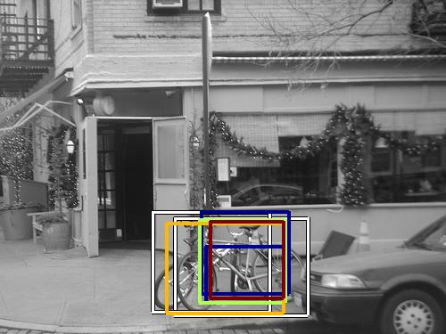

0.581638

0.633068

0.661623

0.681511

0.701844

0.742260

0.750087

0.762706

0.763751

0.765665
| Target image | 0.581638 | 0.633068 | 0.661623 | 0.681511 | 0.701844 | 0.742260 | 0.750087 | 0.762706 | 0.763751 | 0.765665 |
Target image |  16826.097656 |  15502.623047 |  11923.802734 |  11881.087891 |  10717.154297 |  9873.344727 |  7315.407227 |  6665.133789 |  6155.012207 |  6110.399902 |
Target image |  14288.621094 |  13996.672852 |  13527.025391 |  8818.306641 |  8103.727051 |  7428.012695 |  7181.149414 |  6313.051270 |  6204.348633 |  5425.656250 |
Target image |  9076.348633 |  7026.482422 |  7017.072266 |  6612.366699 |  6235.562500 |  6117.491699 |  6057.540039 |  6042.057129 |  5886.130371 |  5493.020996 |
Target image |  6938.197754 |  6865.758789 |  6528.711426 |  6525.371582 |  6047.947754 |  5904.253906 |  5691.243652 |  5496.531250 |  5300.934570 |  4820.123047 |